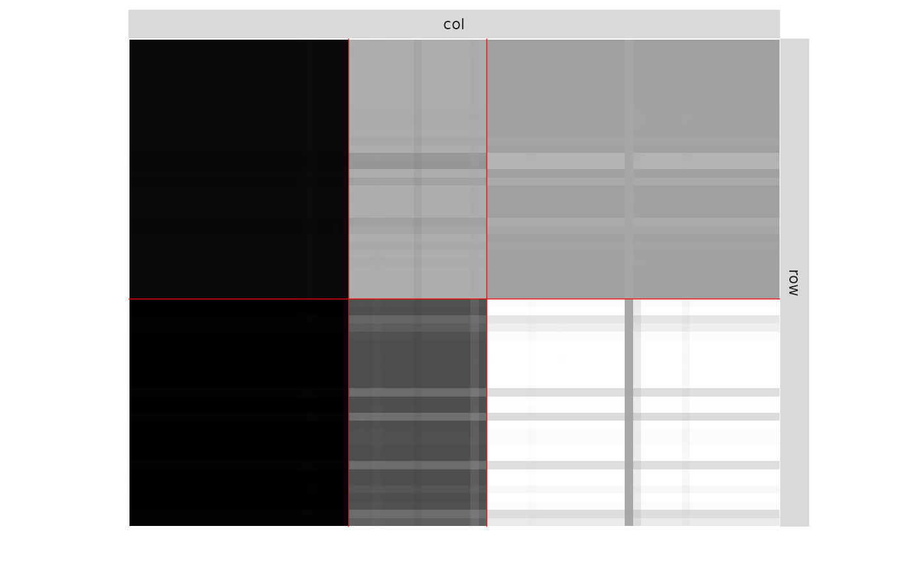
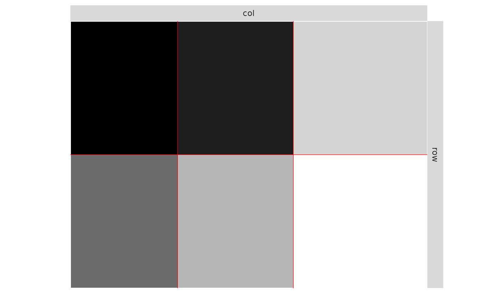

Estimation of Bipartite SBMs
estimateBipartiteSBM.RdThis function performs variational inference of bipartite Stochastic Block Models, with various model for the distribution of the edges: Bernoulli, Poisson, or Gaussian models.
estimateBipartiteSBM( netMat, model = "bernoulli", covariates = list(), estimOptions = list() )
Arguments
| netMat | a matrix describing the network: either an adjacency (square) or incidence matrix with possibly weighted entries. |
|---|---|
| model | character describing the model for the relation between nodes ( |
| covariates | a list of matrices with same dimension as mat describing covariates at the edge level. No covariate per Default. |
| estimOptions | a list of parameters controlling the inference algorithm and model selection. See details. |
Value
a list with the estimated parameters. See details...
Details
The list of parameters estimOptions essentially tunes the optimization process and the variational EM algorithm, with the following parameters
"nbCores"integer for number of cores used. Default is 1.
"verbosity"integer for verbosity (0, 1). Default is 1.
"exploreFactor"control the exploration of the number of groups
"nbBlocksRange"minimal and maximal number or blocks explored
Examples
### ======================================= ### BIPARTITE BINARY SBM (Bernoulli model) ## Graph parameters and Sampling nbNodes <- c(100, 120) blockProp <- list(c(.5, .5), c(1/3, 1/3, 1/3)) # group proportions means <- matrix(runif(6), 2, 3) # connectivity matrix # In Bernoulli SBM, parameters is a list with a # matrix of means 'mean' which are probabilities of connection connectParam <- list(mean = means) mySampler <- sampleBipartiteSBM(nbNodes, blockProp, connectParam, model = 'bernoulli') ## Estimation myBipartiteSBM <- estimateBipartiteSBM(mySampler$netMatrix)#> -> Estimation for 2 groups (1+1) #>#> -> Computation of eigen decomposition used for initalizations #> -> for rows #> -> for cols #> #> -> Pass 1 #> -> With ascending number of groups #> -> For 3 groups #>#> -> For 4 groups #>#> -> For 5 groups #>#> -> For 6 groups #>#> -> For 7 groups #>#> -> For 8 groups #>#> -> With descending number of groups #> -> For 7 groups #>#> -> For 6 groups #>#> -> For 5 groups #>#> -> For 4 groups #>#> -> For 3 groups #>#> -> Pass 2 #> -> With ascending number of groups #> -> For 3 groups #> -> For 4 groups #> -> For 5 groups #> -> For 6 groups #> -> For 7 groups #>#> -> For 8 groups #>#> -> With descending number of groups #> -> For 7 groups #> -> For 6 groups #> -> For 5 groups #> -> For 4 groups #> -> For 3 groups #> -> Pass 3 #> -> With ascending number of groups #> -> For 3 groups #> -> For 4 groups #> -> For 5 groups #> -> For 6 groups #> -> For 7 groups #> -> For 8 groups #> -> With descending number of groups #> -> For 7 groups #> -> For 6 groups #> -> For 5 groups #> -> For 4 groups #> -> For 3 groups### ======================================= ### BIPARTITE POISSON SBM ## Graph parameters & Sampling nbNodes <- c(100, 120) blockProp <- list(c(.5, .5), c(1/3, 1/3, 1/3)) # group proportions means <- matrix(rbinom(6, 30, 0.25), 2, 3) # connectivity matrix connectParam <- list(mean = means) mySampler <- sampleBipartiteSBM(nbNodes, blockProp, connectParam, model = 'poisson') ## Estimation myBipartiteSBM <- estimateBipartiteSBM(mySampler$netMatrix, 'poisson')#> -> Estimation for 2 groups (1+1) #>#> -> Computation of eigen decomposition used for initalizations #> -> for rows #> -> for cols #> #> -> Pass 1 #> -> With ascending number of groups #> -> For 3 groups #>#> -> For 4 groups #>#> -> For 5 groups #>#> -> For 6 groups #>#> -> With descending number of groups #> -> For 5 groups #>#> -> For 4 groups #>#> -> For 3 groups #>#> -> Pass 2 #> -> With ascending number of groups #> -> For 3 groups #> -> For 4 groups #>#> -> For 5 groups #>#> -> For 6 groups #>#> -> With descending number of groups #> -> For 5 groups #>#> -> For 4 groups #> -> For 3 groups #> -> Pass 3 #> -> With ascending number of groups #> -> For 3 groups #> -> For 4 groups #> -> For 5 groups #> -> For 6 groups #> -> With descending number of groups #> -> For 5 groups #> -> For 4 groups #> -> For 3 groups### ======================================= ### BIPARTITE GAUSSIAN SBM ## Graph parameters & ssampling nbNodes <- c(100, 120) blockProp <- list(c(.5, .5), c(1/3, 1/3, 1/3)) # group proportions means <- 20 * matrix(runif(6), 2, 3) # connectivity matrix connectParam <- list(mean = means, var = 1) mySampler <- sampleBipartiteSBM(nbNodes, blockProp, connectParam, model = 'gaussian') ## Estimation myBipartiteSBM <- estimateBipartiteSBM(mySampler$netMatrix, 'gaussian')#> -> Estimation for 2 groups (1+1) #>#> -> Computation of eigen decomposition used for initalizations #> -> for rows #> -> for cols #> #> -> Pass 1 #> -> With ascending number of groups #> -> For 3 groups #>#> -> For 4 groups #>#> -> For 5 groups #>#> -> For 6 groups #>#> -> For 7 groups #>#> -> For 8 groups #>#> -> With descending number of groups #> -> For 7 groups #>#> -> For 6 groups #>#> -> For 5 groups #>#> -> For 4 groups #>#> -> For 3 groups #>#> -> Pass 2 #> -> With ascending number of groups #> -> For 3 groups #> -> For 4 groups #> -> For 5 groups #> -> For 6 groups #> -> For 7 groups #>#> -> For 8 groups #> -> With descending number of groups #> -> For 7 groups #> -> For 6 groups #> -> For 5 groups #> -> For 4 groups #> -> For 3 groups